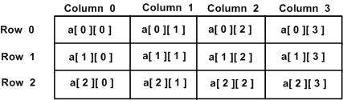

C++ allows multidimensional arrays. Here is the general form of a multidimensional array declaration −
type name[size1][size2]...[sizeN];
For example, the following declaration creates a three dimensional 5 . 10 . 4 integer array −
int threedim[5][10][4];
The simplest form of the multidimensional array is the two-dimensional array. A two-dimensional array is, in essence, a list of one-dimensional arrays. To declare a two-dimensional integer array of size x,y, you would write something as follows −
type arrayName [ x ][ y ];
Where type can be any valid C++ data type and arrayName will be a valid C++ identifier.
A two-dimensional array can be think as a table, which will have x number of rows and y number of columns. A 2-dimensional array a, which contains three rows and four columns can be shown as below −

Thus, every element in array a is identified by an element name of the form a[ i ][ j ], where a is the name of the array, and i and j are the subscripts that uniquely identify each element in a.
Multidimensioned arrays may be initialized by specifying bracketed values for each row. Following is an array with 3 rows and each row have 4 columns.
int a[3][4] = {
{0, 1, 2, 3} , /* initializers for row indexed by 0 */
{4, 5, 6, 7} , /* initializers for row indexed by 1 */
{8, 9, 10, 11} /* initializers for row indexed by 2 */
};
The nested braces, which indicate the intended row, are optional. The following initialization is equivalent to previous example −
int a[3][4] = {0,1,2,3,4,5,6,7,8,9,10,11};
An element in 2-dimensional array is accessed by using the subscripts, i.e., row index and column index of the array. For example −
int val = a[2][3];
The above statement will take 4th element from the 3rd row of the array. You can verify it in the above digram.
#include <iostream> using namespace std; int main () { // an array with 5 rows and 2 columns. int a[5][2] = { {0,0}, {1,2}, {2,4}, {3,6},{4,8}}; // output each array element's value for ( int i = 0; i < 5; i++ ) for ( int j = 0; j < 2; j++ ) { cout << "a[" << i << "][" << j << "]: "; cout << a[i][j]<< endl; } return 0; }
When the above code is compiled and executed, it produces the following result −
a[0][0]: 0 a[0][1]: 0 a[1][0]: 1 a[1][1]: 2 a[2][0]: 2 a[2][1]: 4 a[3][0]: 3 a[3][1]: 6 a[4][0]: 4 a[4][1]: 8
As explained above, you can have arrays with any number of dimensions, although it is likely that most of the arrays you create will be of one or two dimensions.